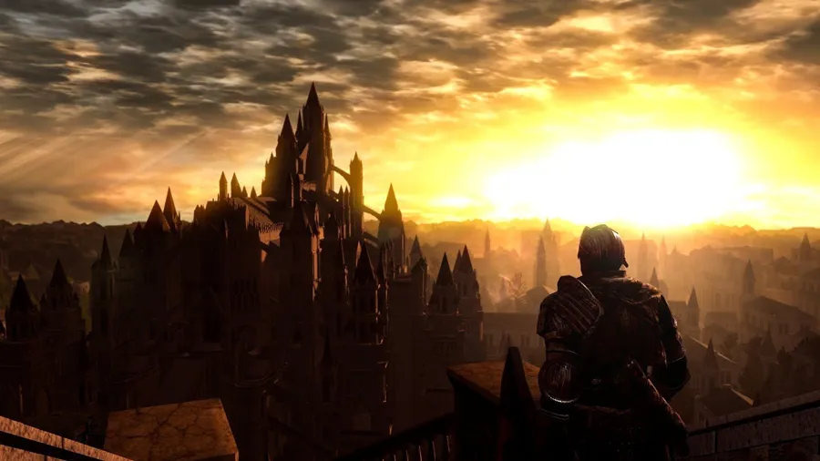

¿Por qué Dark Souls es considerado una obra de arte?
La discusión sobre si los videojuegos pueden ser considerados arte encuentra en Dark Souls, la obra maestra de Hidetaka Miyazaki, uno de sus argumentos más sólidos. No es arte por sus gráficos, aunque su estética es inolvidable, sino por su capacidad de usar la interactividad para evocar emociones profundas y contar una historia de una manera que solo un videojuego puede lograr.
La Narrativa Ambiental: Un Mundo que Habla
Dark Souls abandona las cinemáticas expositivas. En su lugar, el mundo de Lordran es el narrador principal. La historia no se te cuenta, se descubre. Cada descripción de objeto es un fragmento de un poema épico perdido; la posición de un cadáver cuenta la historia de una batalla desesperada; la arquitectura de una ruina susurra la gloria de un reino caído. El jugador no es un espectador, es un arqueólogo descifrando los secretos de un mundo moribundo, y esa labor de interpretación es una experiencia artística en sí misma.
El Diseño de Niveles como Poesía Espacial
El mapa de Lordran no es una simple sucesión de escenarios, es un laberinto vertical y coherente que se pliega sobre sí mismo. La epifanía que sientes al abrir una reja y descubrir que has creado un atajo hacia el Santuario de Enlace de Fuego desde las profundidades de la Parroquia de los No Muertos es un momento de diseño magistral. Esta interconexión crea una sensación de lugar creíble y un mundo que se siente genuinamente explorado y conquistado, no solo transitado.
En Lordran, el espacio no solo se recorre, se aprende y se respeta. Cada atajo es un verso en la oda a su diseño.
La Dificultad como Herramienta Emocional
La infame dificultad del juego no es un capricho sádico. Es el principal vehículo emocional. La frustración de morir una y otra vez contra un jefe se transforma en una euforia incomparable al asestar el golpe de gracia. Este ciclo de fracaso y superación refleja el tema central del juego: la lucha contra la entropía, la perseverancia frente a una desesperanza abrumadora. Dark Souls te enseña el valor del esfuerzo y la belleza de una victoria ganada con sudor y sangre, una lección que resuena mucho después de apagar la consola.